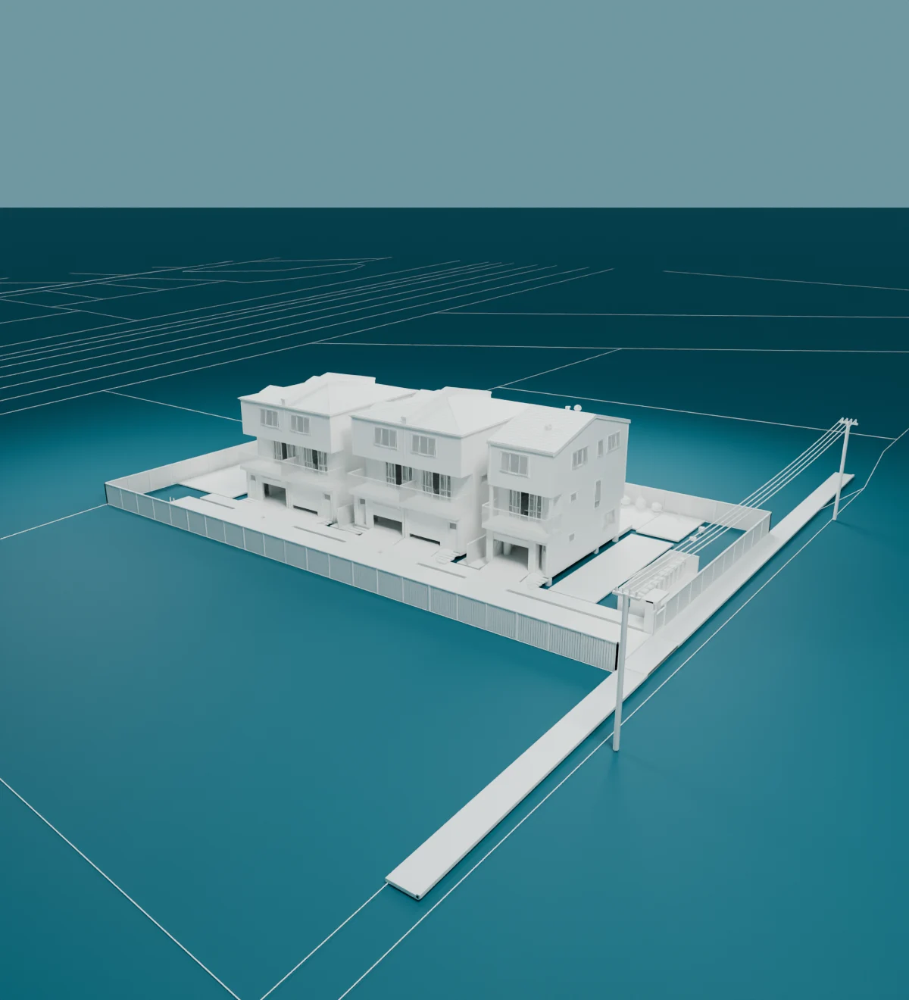

View the new Funnel Display logo study → · Previous Datum studies below.

One project.
Every discipline.
Every discipline.

Understandthe wholebuilding.
Bring every discipline, decision
and delivery package together.
Datum, refined.
Less stretched. More assured.
Choose by the shape and rhythm of the letters. These are original display-font prototypes, not finished body fonts. Switch the cut above, scroll the scene, or type your own words below.
ABCDEFGHIJKLMNOPQRSTUVWXYZ
abcdefghijklmnopqrstuvwxyz
0123456789 . , : - /
abcdefghijklmnopqrstuvwxyz
0123456789 . , : - /
67 original glyphs per cut. Spacing and letterforms remain exploratory. The final choice will receive optical corrections, kerning, extended punctuation and a separately tuned text cut.
Back to the map ↑